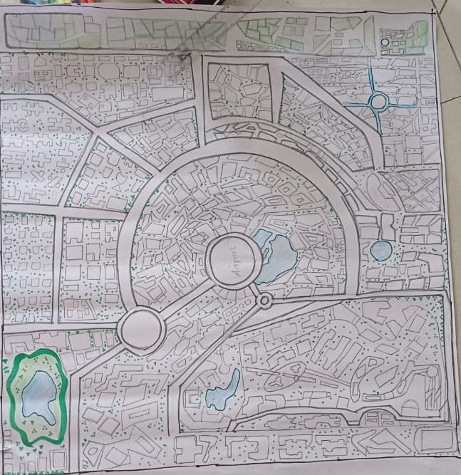

Problem Statement
Develop an innovative pollution control system ensuring sustainability and public health.
Business Cases Table
| SL. NO | Business Idea Identified | Description | Owner | Problem Tool |
|---|---|---|---|---|
| 1 | Air Pollution Management | Develop affordable AI-powered air purifiers for households and offices providing real-time air quality monitoring and filtering. | Sahana | Graphs(Dijkstra's Algorithm), BST |
| 2 | Plastic Waste Reduction | Create a subscription-based service offering reusable, biodegradable packaging solutions for businesses and individuals. | Gurulingamma | Hashing, Greedy Algorithm |
| 3 | Industrial Emission Tracking | Develop a blockchain-based platform for tracking and reporting industrial carbon and pollutant emissions. | Sahana | Linked list, Hashing |
| 4 | Agricultural Runoff Solution | Design eco-friendly, organic alternatives to traditional fertilizers and pesticides, ensuring reduced environmental impact. | Rashmi | Dynamic Programming |
| 5 | E-Waste Recycling | Create a platform for collecting, refurbishing, and reselling e-waste or extracting valuable materials. | Shrutika | Queues |
| 6 | Water Pollution Monitoring | Offer IoT-based water quality monitoring systems to industries, municipalities, and agricultural sectors. | Shrutika | Heap, Dijkstra's Algorithm |
City Plan of Ahmednagar

SDG Goals
1. Air Pollution Management
- Location: High-density residential and industrial areas.
- Problem: Increase in air pollution levels due to industrial emissions and vehicle traffic.
- SDG Goal: SDG 11 (Sustainable Cities and Communities) aims to reduce air pollution and improve urban resilience.
2. Plastic Waste Reduction
- Location: Commercial and industrial areas.
- Problem: Excessive plastic waste generation, particularly from packaging.
- SDG Goal: SDG 12 (Responsible Consumption and Production) focuses on reducing waste and promoting sustainable consumption.
3. Industrial Emission Tracking
- Location: Industrial zones near the outskirts of the city.
- Problem: High industrial carbon emissions contributing to climate change.
- SDG Goal: SDG 13 (Climate Action) emphasizes reducing greenhouse gas emissions.
4. Agricultural Runoff Solution
- Location: Agricultural and peri-urban areas.
- Problem: Use of chemical fertilizers and pesticides contaminating water sources.
- SDG Goal: SDG 6 (Clean Water and Sanitation) aims to protect water resources from pollution.
5. E-Waste Recycling
- Location: Urban and suburban areas with electronic consumer goods.
- Problem: Growing e-waste from old electronic devices.
- SDG Goal: SDG 12 (Responsible Consumption and Production) focuses on minimizing e-waste and promoting recycling.
6. Water Pollution Monitoring
- Location: Industrial, agricultural, and urban areas.
- Problem: Poor water quality due to untreated waste from industries and agriculture.
- SDG Goal: SDG 6 (Clean Water and Sanitation) aims to improve water quality and access.
Team Details
Below is a table summarizing team members and the business cases they are working on:
| SL. NO | Name | USN | Roll No | Business Cases |
|---|---|---|---|---|
| 1 | Sahana Sulegavi | 01FE23BCS301 | 448 | Air Pollution Management Industrial Emission Tracking |
| 2 | Gurulingamma Birdar | 01FE23BCS282 | 446 | Plastic Waste Reduction |
| 3 | Rashmi Mathapati | 01FE23BCS300 | 419 | Agricultural Runoff Solution |
| 4 | Shrutika Ambure | 01FE23BCS198 | 431 | E-Waste Recycling Water Pollution Monitoring |